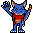

Hiya! Benvenuto/a nel mio sito web ufficiale e personale, dove metto... robe bielle! ^^
- FAQ / Info -
👉 Chi sei e quale personaggio ti identifichi? 👈
- Chi sei e quale personaggio ti identifichi? -

Salve, sono Stefano (anche conosciuto come Stegon, Steven e Steveno), nato nel 4 Dic. 1998. Entrato per la prima volta su Telegram nel lontano Luglio 2016, mentre ero ancora su WhatsApp e cercavo una alternativa migliore.
Stegon è composto da due parole unite, ossia Steven (che è un diminutivo del mio nome reale) e Dragon (visto che amo tanti i draghi). Ah! Non chiamatemi mai con la storpiatura Stregon, grazie...
(La descrizione del mio personaggio può coincidere, in alcune parti, con me come persona reale)
Mi identifico come un giovane drago blu antropomorfo privo di corna ed ali ed abito in una foresta vasta lontano dai luoghi industriali.
Gran parte della mia forza fisica è situata nella parte bassa, avendo così la possibilità di correre ad alta velocità, effettuare dei salti alti e fare ben uso della coda in molteplici modi.
Mi potete avvistare in gran parte dei luoghi, anche in quelli che non ho mai visitato, mentre mi porto uno zaino da avventuriero e la comoda, affidata e flessibile sciarpa rossa.
Sono un tipo piuttosto tranquillo e gradisce ascoltare quel che gli altri dicono (soprattutto se le informazioni sono utili per il mio arricchimento personale) ed osservare l'ambiente in cui son situato e sono anche piuttosto ficcanaso ed indipendente, tanto da rendermi un buono caotico.
👉 Perché non pubblichi spesso molti post? 👈
- Perché non pubblichi spesso molti post? -
* Non ho molto tempo ed idee nell'idearli, scriverli ed elaborarli;
* Preferisco stare molto di più sul lato qualità che sulla quantità;
* Non far invecchiare troppo velocemente i post precedenti.
👉 Quando è stato creato questo sito web? 👈
- Quando è stato creato questo sito web? -
Riguardo alla versione Blogger (raggiungibile nell'opzione Post in alto) prima che iniziasse Marzo 2017 e già erano presenti altri siti web precedenti a questo, poi chiusi e/o eliminati in seguito (alcuni sono ancora presenti ma non accessibili). Riguardo alla versione GitHub (dove ti trovi ora) è stato pubblicato nel 14 Maggio 2020, mentre mi sono preso il giusto impegno e tempo, visto che è da tanto che lo volevo fare.
Stegon's Ownpage usa un template preconfezionato ma personalizzato da me pesantemente e reso leggero, così la navigazione risulterà più veloce e fluida ed adatto a qualsiasi piattaforma. Se in futuro sarà presente qualche problema o mancanza, rimarrò aggiornato per far qualcosa e farmi dare una mano da qualcuno con il sito web che altro.
👉 Quale dispositivi e sistemi operativi hai? 👈
- Quale dispositivi e sistemi operativi hai? -
- DISPOSITIVI -
* Lenovo IdeaPad G580 (come PC principale)
* eMachines HM02_PT (come PC secondario)
* Xiaomi Pocophone F1 (come Smartphone principale)
* Alcatel Pixi 4 5" (come Smartphone secondario)
* Nintendo New 3DS XL
* Nintendo Wii U - Premium Pack
* Nintendo Switch
- SISTEMI OPERATIVI -
* Manjaro (PC principale)
* MX Linux (PC secondario)
* Android (Smartphone)
👉 Quali Social posso seguirti + Codici amico? 👈
- Quali Social posso seguirti + Codici amico? -
Premendo l'opzione Social (in alto) o scorrendo fino in basso per tutta la pagina web, puoi trovare i pulsanti dove è possibile accedere in uno di questi Social Network. I pulsanti Telegram e Ludomedia sono delle pagine di questo sito web dove sono presenti maggiori informazioni del mio account di questi Social.
3DS = 4167-4652-0835 (Nacitendo)
Wii U = Nacitendo
Switch = SW-0639-6262-7994 (Steveno98)
👉 Dove si trovano i tuoi articoli? 👈
- Dove si trovano i tuoi articoli? -
Premendo l'opzione Post (in alto) è possibile accedere nella sezione dove sono presenti gli articoli / post di quel che ho scritto da leggere e la possibilità di accedere nella versione Blogger di questo sito web, dove, purtroppo, fa uso di JavaScript, però c'è la possibilità di commentare in ogni singolo articolo.
- Altro -
E' un sito web che serve per archiviare le domande del giorno di un evento giornaliero.
Sono presenti dei codici C++ e altro scritti dal sottoscritto.
Sono presenti dei giochi creati dal sottoscritto.
👉 Modern LXQt 👈
👉 Modern LXQt 👈

Si tratta di una distribuzione personalizzata con al suo interno il desktop LXQt. E' prestante, veloce, leggero ed anche moderno nel suo aspetto... con già anche dei programmi pre-installati molto utili per le proprie attività lavorative.
Purtroppo, è discontinuato...
Si tratta di una distribuzione GNU/Linux che fa uso di un LXQt personalizzato.